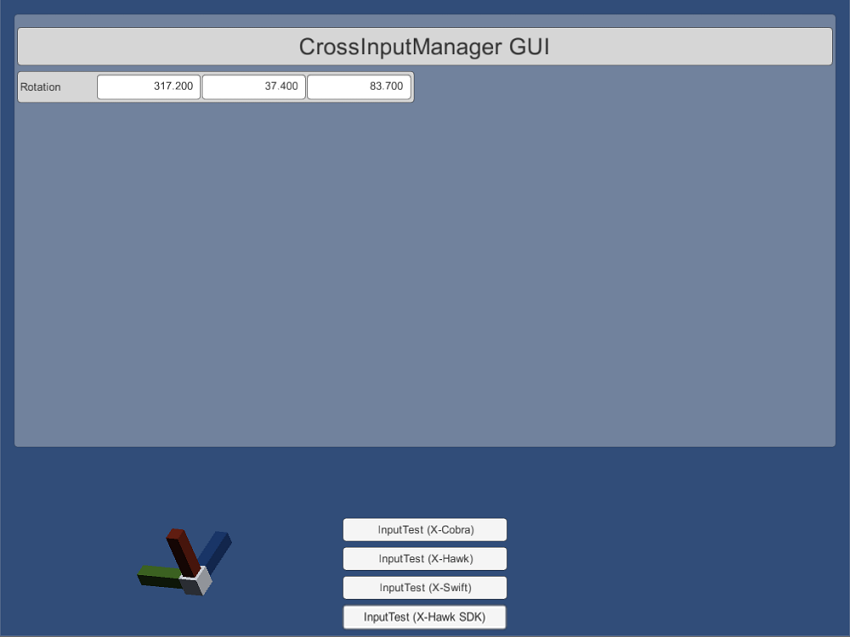

Table of Contents
This demo shows how to obtain detailed info of X-Cobras via X-Hawk. It is also helpful to validate
Tip:
- By now, X-Hawk should be connected with PC (Windows) successfully. During the process, no extra driver is needed, which will be automatically installed by Windows after plugging it to PC.
- This can be verified via right click
Computer -> Manage -> Device Manager -> Human Interface Devices, extra HID-compliant device and USB input device will be added.
Tracking_hid -> Tracking_hid.exe to run. You will see the real-time status of X-Cobra (assume two X-Cobras are connected) that are represented by 3D virtual balls in the program window, with FPS information shown in the left bottom.
Toggle IMU Display button to show detailed IMU information.
Toggle CrossInput GUI button to show detailed CrossInput GUI information, including position, rotation, stick, trigger and buttons.Toggle Log button to show detailed log information.This demo shows how to obtain detailed info of 1) X-Cobras via X-Hawk, 2) X-Cobras via Bluetooth and 3) X-Swift via Bluetooth. It is also helpful to validate
InputTest (X-Hawk)The hardware requirement and setup steps are the same as the above tracking HID demo except the last step replaced by the following:
CrossInputManager -> CrossInputManager.exe to run.InputTest (X-Hawk) button to activate this mode.Once done, you will be able to obtain the detailed X-Cobra’s information (including position, rotation, axis, trigger and buttons, etc.) through X-Hawk.

InputTest (X-Hawk SDK)The hardware requirement and setup steps are the same as the above InputTest (X-Hawk) demo except the very last step replaced by the following:
InputTest (X-Hawk) button to activate this mode.Once done, you will be able to obtain the detailed X-Cobra’s information (including position, rotation, axis, trigger and buttons, etc.) through X-Hawk in plain text format.
InputTest (X-Cobra)This sample demonstrates how to obtain the detailed X-Cobra’s information (including rotation, axis, trigger and buttons, etc.) through Bluetooth USB adapter plugged in PC.

(optional) Install Bluetooth driver.
Normally, the driver will be installed automatically, which can be verified by checking whether there is a
CSR BlueCore BluetoothunderDevice Manager -> Universal Serial Bus controllers.
If you can not find it there, you will need to install the driver mannually. Steps are:
Depending on your PC system:
CSR8510 Bluetooth USB Adapter -> Windows 7 -> win32/64 -> CSRBlueCoreUSB.inf -> right click -> Install.For Win8 or Win10: CSR8510 Bluetooth USB Adapter -> Windows 8 -> win32/64 -> CSRBlueCoreUSB.inf -> right click -> Install.

X-Console -> X-Console.exe to run.
X-Device 0 button to scan X-Cobra.
Stop Scan button to stop scanning.00:) in the dropdown list.

CrossInputManager -> CrossInputManager.exe to run.InputTest (X-Cobra) button to activate this mode.Once done, you will be able to obtain the detailed X-Cobra’s information (including rotation, axis, trigger and buttons, etc.) through Bluetooth USB adapter plugged in PC.

InputTest (X-Swift)(optional) Install Bluetooth driver.
Normally, the driver will be installed automatically, which can be verified by checking whether there is a
CSR BlueCore BluetoothunderDevice Manager -> Universal Serial Bus controllers.
If you can not find it there, you will need to install the driver mannually. Steps are:
Depending on your PC system:
CSR8510 Bluetooth USB Adapter -> Windows 7 -> win32/64 -> CSRBlueCoreUSB.inf -> right click -> Install.For Win8 or Win10: CSR8510 Bluetooth USB Adapter -> Windows 8 -> win32/64 -> CSRBlueCoreUSB.inf -> right click -> Install.
X-Console -> X-Console.exe to run.X-Device 2 button to scan X-Swift.
Stop Scan button to stop scanning.00:) in the dropdown list.
CrossInputManager -> CrossInputManager.exe to run.InputTest (X-Swift) button to activate this mode.Once done, you will be able to obtain the detailed X-Swift’s information (i.e. rotation) through Bluetooth USB adapter plugged in PC.

This tool has three main functionalities:
Check whether X-Hawk has been sucessfully connected to PC.
This can be done by clicking the Check button. If connected sucessfully, message "X-Hawk is found" will be displayed in the status bar, otherwise message "X-Hawk is not found" will be displayed.
Scan and connect X-Cobra to PC via Bluetooth.
Please refer to here for details.
Scan and connect X-Swift to PC via Bluetooth.
Please refer to here for details.
This tool is useful for

(optional) Install Bluetooth driver.
Normally, the driver will be installed automatically, which can be verified by checking whether there is a
CSR BlueCore BluetoothunderDevice Manager -> Universal Serial Bus controllers.
If you can not find it there, you will need to install the driver mannually. Steps are:
Depending on your PC system:
CSR8510 Bluetooth USB Adapter -> Windows 7 -> win32/64 -> CSRBlueCoreUSB.inf -> right click -> Install.For Win8 or Win10: CSR8510 Bluetooth USB Adapter -> Windows 8 -> win32/64 -> CSRBlueCoreUSB.inf -> right click -> Install.
IMU_cal_tool_V1 -> IMU_Cal_Tool_V1.exe to run. You will see the calibration program like this:
Search button in the calibration program.Connect button. X-Cobra will vibrate once it is successfully connected.
Setup window, including the information of ratotation, axis, button, etc. Wave, press and rotate the X-Cobra to check it out!
Calibrate X-Cobra.
Note: you do not need to do this unless you find that X-Cobra’s IMU information is not accurate enough, and make sure there is no magnetic interference nearby, e.g. mobile phones, pads, electric fans, etc.
Magnetometer menu in the calibration program to make the magnetometer window active.Magnetometer_X, Magnetometer_Y and Magnetometer_Z are changing over time.Calibrate button in the magnetometer window to start calibrating.Tips: You can rotate and move X-Cobra to calibrate it. The goal here is try to make the three yellow bars taller (i.e. values span a large range).
Save button. The calibration information will be written to X-Cobra.Magnetometer_X, Magnetometer_Y and Magnetometer_Z will stop changing).Validation menu in the calibration program to make the validation window active.Stationary Validation button in the validation window to start.
Use this tool to connect the X-Cobra and X-Swift to your Android device via Bluetooth. This tool is used if you want to connect the X-Cobra and X-Swift to your mobile device WITHOUT using the X-Hawk. Once connected and saved (refer to SDK Doc for step-by-step instructions), you can begin the Ximmerse SDK test below.

Similar to CrossInputManager tool on PC, you can use this tool with OR without the X-Hawk. Essentially, this tool allows you to test if the X-Cobra and X-Swift is functioning properly on your mobile device. The tool provides the following information:

The Cardboard Test is a basic demo that shows the position and rotation of the X-Cobra when connected to your mobile device via the X-Hawk.